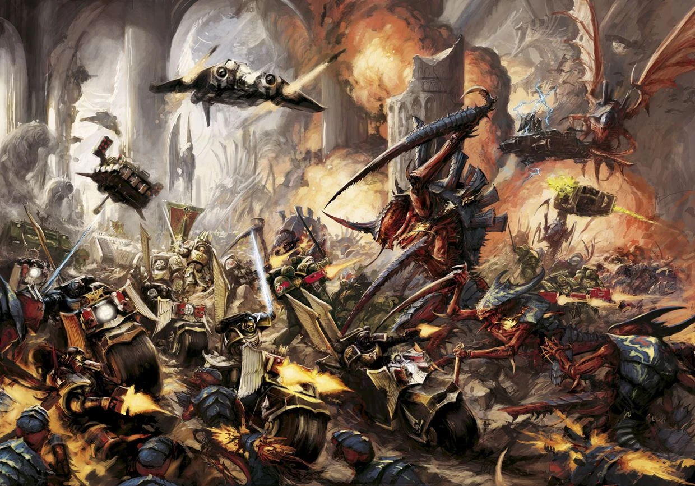
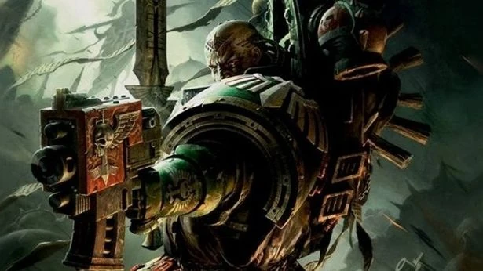
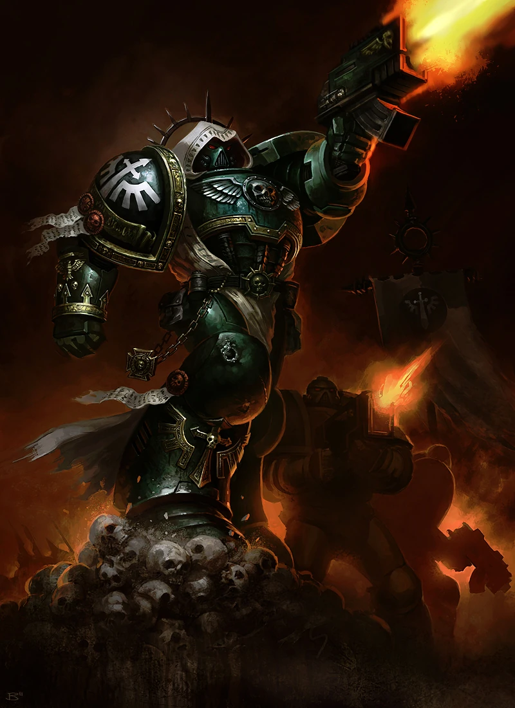

A single interactive chapter map for the Dark Angels, built from a BattleScribe catalogue and
framed as a grim archive of lineage, command, and wargear.
The Setting
In The 41st Millennium
Humanity survives inside a vast, decaying empire where faith, war, and bureaucracy have
fused into one brutal machine. Across that darkness, the Adeptus Astartes are not gentle
heroes but transhuman weapons, deployed to hold back xenos, heretics, and the horrors of Chaos.
The First Legion
Who Are The Dark Angels?
The Dark Angels are the First Legion: austere, knightly, secretive, and burdened by an old
shame. Beneath their formal discipline lies the private hunt for the Fallen, and much of the
Chapter's structure, ritual, and violence is shaped by that hidden mission of repentance.

The Chapter At WarDark Angels meeting the foe in open battle

Chapter CommandKnightly rank and ritual authority

The First LegionIconic heraldry, armor, and monastic presence
Loading a hierarchy from primarch to wings, command circles, strike forces, and war engines.
Named entries--Characters--Deathwing--Ravenwing--War engines--
Reading Guide
How this prototype is organized
The tree begins with Lion El'Jonson and then divides into four curated archive branches:
Supreme Command, Deathwing, Ravenwing, and a Sealed Archive for Legends-era records. Each
branch then resolves into masters, strike formations, hunt packs, or war engines.
Click any node in the archive to inspect its dossier. This structure is intentionally
hand-shaped around lore readability rather than copied mechanically from XML categories,
so the tree reads more like a Dark Angels command archive than a raw data dump. Click a
branch seal to unfold or close it, then drag the map or use the zoom bar to inspect dense clusters.